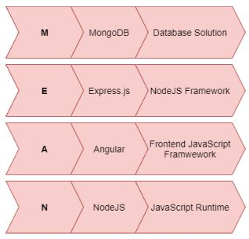
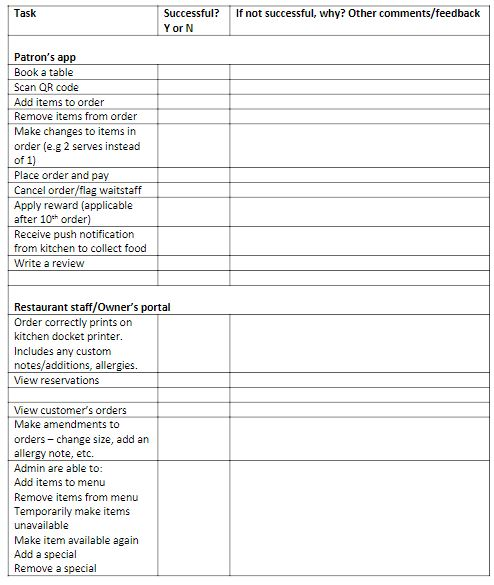
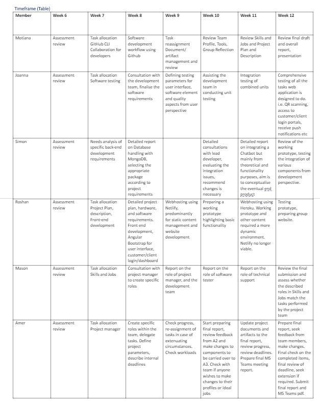

The project will be a web app linked to the restaurant's main website. Customers can place an order
for takeaway from anywhere through the web app but can only order dine-in if they are seated at a
table. Ordering from the app helps restaurants a great deal as it will reduce the amount of staff
needed to take orders instead, they can use that extra force in the kitchen, this will be especially
helpful in busy times. The reduced customer interaction means the restaurant can focus more on
the quality of food.
There is a seat reservation function where customers must sign in to book a table, and the booked
table will be displayed as Reserved before a certain time from reserved time. When the table is
Reserved customers will not be able to place an order from that table unless the person that booked
orders from their account.
In the app each table's QR code will be linked to a table in the POS System. Once a customer enters
the shop, they will take a seat at the table of their choosing. To view the menu customers will need
to scan the QR code at the table or visit the restaurant website then go to order.
Ordering from the table, the customer has access to the full menu and what is being served, can
place each item to cart and to place the order they must pay. Once payment is received, the order is
then sent to the kitchen printer. Then after the order is ready the chef can send notification to
customers that placed the order via Admin App to let them know that their food is ready and they
should pick it up from the counter.
Review System - customers can give feedback and rating on their food once they are done, they can
choose to leave review as anonymous, this review will go directly to the restaurant which will help
them improve. This will help in keeping a good track record of satisfied customers which will work in
favour of the restaurant. This will ensure that the restaurant's food and service is always excellent
quality.
Loyalty System - customers can place orders as guests or register an account which will track how
many visits they have had and will be given loyal customer offers(could be monthly specials or
discounts after certain amount of orders etc.). Owners can set up loyalty offers via the admin panel,
they can run monthly offers or run offers based on orders where after customers have placed orders
a certain amount of times on different occasions they will receive a reward.
Aims
Mobile phones have become an integral part of our daily life. With seamless internet connectivity, these devices have become a utility with immense possibility. Among several applications users engage in their daily life, with this web application, we aim to provide a very comfortable, secure, and reliable way for people to experience dining in at a restaurant. Not only that, but this application will also allow restaurants to manage their menu online, collect orders and feedback from customers in real time. This project aims to provide exceptional service to both customers and the business by reducing human errors that may otherwise occur in taking orders.
Roles
Project Manager- Amer
- Lead Developer - Roshan
- Backend Developer - Simon
- Software Tester - Joanna
- Technical Support/Help Desk - Mason
- Document/Artefact review and management - Motiana
Scopes and Limits
The aim of our project team is to deliver a product which caters for the needs of all stakeholders within the hospitality sector. From consumer perspective, it is to provide a contactless experience which promotes safe practices and improves consumer sentiment. From hospitality staff perspective, provide a safe work environment where they are not exposed to additional health risks. From business owner’s perspective, provide a sustainable environment which meets the stringent regulatory requirements but also delivers cost saving measures in the wake of declining demand. But due to time and financial constraints, we had to define the scope and limitations of our product. The rollout is going to be in stages and there will be eventual upgrades, first version of our application will have defined limitations in key areas such as.
Cybersecurity – Our application uses third party service providers such as web hosting and cloud-based data storage. Third parties are responsible for the integrity of information stored on their servers, but it can certainly be enhanced by deploying additional cybersecurity measures.
SmartOrder® also provides a link to restaurant payment system, this has potential for infiltration, but team has decided that at this stage no additional cybersecurity is warranted. Product integrity will be monitored, and any breaches will be scrutinised, additional cybersecurity measures will be integrated into our systems should there be a need for it in future.
Chatbot – What a chatbot can do is only limited by the imagination of the project team deploying it. At the beginning of our project, team 24 envisaged a chatbot with inbuilt capabilities to answer not only basic customer enquiries but also offer them advice on dishes containing food allergens and help customers with specific preferences such as halal, kosher and vegan meals. In the end, due to time constraints team decided to opt for a third-party bot with minimal capability but one which will answer simple queries and direct customers to service desk if required.
Tools and Technologies
The hardware requirements to use the web app are:
- Customers will require smart phones with internet connection to go on to the website and make orders, track orders.
- Client will require: iPad/POS System, WIFI printer, requires internet connection on premisesto access their admin panel, receive orders, manage orders & print order.
Since the project is a large-scale application, to divide the workload of the application amongst all the team members evenly, we decided to break down the whole application stack into multiple manageable modules. Each team member will be given a module to work on and research with regards to jobs they are interested in. The modules will be broken down into the following:
- UI and UX design and development module
- Customer sign in and sign out module - Designing and developing sign in and sign out system
- Restaurant menu holding module - Database of restaurant menu
- Ordering module - Design and developing of an ordering system which will have cart function, payment gateway, and send orders to the restaurant
- Admin panel - Basic admin panel to override all the modules if needed, and will have management features for staff, so that staff at the shop can change easily, will have features such as putting items off the menu for the day, adding specials, changing prices, editing menu, add photos etc.
- Admin panel - Basic admin panel to override all the modules if needed, and will have management features for staff, so that staff at the shop can change easily, will have features such as putting items off the menu for the day, adding specials, changing prices, editing menu, add photos etc.
- Branding module - promoting and marketing the app to the end users, so shops can receive orders online, this module will also include deployment of the application.
We will look at each members ideal job and will assign tasks accordingly, we all have different interests which will link up well with the modules, Amer will handle the project management, Roshan and Simon will handle the development of Software, Joanna will handle the testing and Mason will assist Joanna on application testing and also handle support after the deployment of project.
Github will be used for group collaboration, as it is a great platform and packed with features, it has seamless collaboration and version control. Trello is a great way to assign tasks and set a due date for tasks to each member of the group, it can also be used for progress tracking through comments.To use the service, the customers will need a smartphone that can access the internet. The shop will need a Wi-Fi printer, POS System, and a device that can access the web application admin panel for order management.
For technical skills, knowledge and ideas on different programming languages is required. Knowledge of visual language such as HTML, CSS, JavaScript is needed for front end development and to learn other helpful languages like NodeJS. To make the app work and connect to the server it will require knowledge of server sided languages such as Php, Ruby, Python etc. For databases, we will be using MongoDB because of its flexibility and ease of use, MongoDB will not require extensive knowledge like MySQL. We are planning to use NodeJS as a back-end for the application as this provides flexibility of using JavaScript on both front and back end. Angular and React for front-end. We are looking at researching these functionalities for ease of use.
For Application hosting, we will research on Netlify as they provide a free tier for hosting, easy deployment of the project, as you can just Git push to deploy worldwide, this can link up well with GitHub. As Application hosting is a downside of our group because we do not have knowledge on this, so this will provide simplified hosting.
Stack Choice
MEAN Stack
For development method, we will be following the MEAN stack, it is an agile development method, that consist of JavaScript based technology to produce web apps.
MEAN Stack stands for:

MEAN stack is collection of JavaScript technologies used to develop web applications. From client to server and server to database, everything is based on JavaScript. MEAN stack is used to build quick and robust web applications.
Why MEAN stack?
- 1 language handles everything from frontend to backend
- Flexible Backend API – Flexible and reusable API which can be used for web apps or application
- Powerful Frontend – mobile app like experience, updates instantly, great user experience
- Separation of Concerns – separate frontend and backend, makes it easier to work in a team.
- High performance Technologies – Easy to use to build web applications
MONGO
What is MongoDB
MongoDB is a free and open source database. MongoDB is a NoSQL database; it has no fixed schema which means that you can create records without first defining the structure. Unlike MySQL. Data is stored in JSON or BSON format unlike MySQL where data is stored in a tabular format. Adding new data to MongoDB is simpler as it does not require updating the whole table. With MongoDB you can develop an entire application using only JavaScript.
NoSQL Database Model
NoSQL is non-relational database; they do not use tables or columns. A flexible database used for big data and real-time web applications. NoSQL handles unstructured data where data doesn’t have to
20relate and you don’t have to predefine data compared to relational data, it is cheaper to manage, and scales better, as the database gets bigger you can just add more nodes compared to upgrading a whole data infrastructure. NoSQL does not have steep learning curve.
Express
What is Express.js
Express.js is a free and open source framework for NodeJS meaning most of the code is already written, you can implement what is available to the project. Used to build web applications quick and easily. Express.js only requires the knowledge of JavaScript, make it an easy to learn framework once you have learnt JavaScript. You can build applications and API or use available API. Expreess.js is:
- Model, View and Controller framework for NodeJS application
- Simple and lightweight
- Easy to configure and customise because it provides flexibility
- Great for creating API
- Express packages we can use:
- Express Rate Limit – Middleware used for basic rate limiting and security
- PassportJS – Authentication and Authorisation
- Strapi – Content management
Why Express.js
- Easy to learn and it is a widely used language, makes find information on it a simple task.
- Build different kinds of web applications in a short period of time.
- Most codes are already written.
- Backend toolkit that only requires only knowledge of JavaScript.
Angular
Angular is a JavaScript framework used to build single page applications using HTML and JavaScript. Angular will be used to create the front-end of the website in conjunction with Bootstrap, Angular requires knowledge of JavaScript and TypeScript (helpful but not required). Angular is used for future scalability, and ease of use, it includes features such as:
- Organised front-end structure
- Very powerful and packed with features
- It is an All-in-one solution, it includes routing, HTTP, RxJS and more.
- You can build powerful single page application
With Angular we can create elements that is constantly used into a component, which makes it so we don’t have to keep coding the same thing over and over again, Angular can be used to create headers, footers, special banner etc.
Angular also features Terminal, where you can components easily, it auto generates all files required to create a new component. Angular Bootstrap to be used to create the front-end UI/UX elements.
Angular Bootstrap Module
Bootstrap will used to create the User Interface; bootstrap is a front-end framework that can be used to create responsive websites and web apps. It is free to use but packed with HTML and CSS templates and features to make creating user interface easy. It simplifies the project, saving time when creating user interface. Bootstrap contains documentation of all the features, making it easy to create the front-end of the website by simply following the documentation.
Bootstrap can be used without any experience in it as everything is readily available – although experience in HTML and CSS is highly recommended to make changes that is desired to fit the style on the company. We can use Bootstrap to create all the user interfaces in the web app this includes:
For Customers:
- Sign In/Sign up page
- Profile page of customers that are signed up
- Ordering page
- Shopping carts page
- Menu page
- Ratings page
For Restaurants:
- Sign in page for admins
- Admin portal – To manage menus - categories, items, payment system, update store hours
- Order History page
- Payment history page
- Ratings & review
This can all be created using Bootstrap, we can follow the documentations to create each of the following. As bootstrap is a library of features it will have prebuilt forms which can be used to create sign in/sign up page for both admins and customers. In the documentation, the navigation bar, image gallery, tables are all included to create all other pages.
NodeJS
What is NodeJS
NodeJS is a JavaScript runtime, instead of JavaScript running on browser environment, it runs on your machine as a service or a runtime, which allows use JavaScript as a server sided language like Php, python etc., essentially allows us to run JavaScript to code on the server. NodeJS requires knowledge of JavaScript Fundamentals.
Why use NodeJS?
- Fast, efficient, and highly scalable
- Event driven, non-blocking I/O makes it very fast and efficient
- Popular in the industry
- Same language on front-end and back-end uses JavaScript
- Great for real time services such as chat, shopping carts etc.
Web Hosting
The deployment and hosting of the web site for our application will be handled by Heroku. Heroku is a cloud-based application hosting service which allows developers to run their application across a pre-set number of virtual servers known as “Dynos”. Dynos are Heroku’s version of containerisation, which is a type of software virtualisation system that allows multiple applications to share the same physical hardware(Rouse, 2014).
Heroku offers an efficient and complete hosting service which is cost-effective and dynamic. Some of the features their service includes are, the management of releases by rolling out your application to different environments, ensuring your application automatically recovers from server failures, and handling load balancing across many application instances, allowing you to instantly scale your application(What is Heroku | Heroku, 2020).
Heroku supports all the most common application programming languages such as Ruby, Node.js, Python, Java, Go, PHP, and Scala. Deployment through GitHub is also available. This provides easy deployment of existing applications on Heroku with minimum modifications needed(What is Heroku | Heroku, 2020).
Heroku offers several different service packages, the first three would be of interest to our application. They are:
- “Free/Hobby” A service for small scale applications, personal projects, and testing.
- “Production” For larger scale business-focused applications that require greater bandwidth and support.
- “Advanced” For mission-critical business web applications that require high availability and can handle a high volume of traffic.
Within each of these packages we can choose different levels services such as RAM, storage, and connections. Initial development and testing of our web application would be implemented with the “Hobby” package. This provides basic application hosting and includes 512MB of RAM which would be sufficient to allow us to test and develop the application before full deployment.
Once our web app is fully deployed, we would need to initially upgrade to the “Production” package which starts at US$25 per month. This package offers an increased access bandwidth and many other additional included features. The amount of RAM assigned to your app is variable but obviously has a greater cost when more RAM is used. This package would be sufficient for most of our usage. It would only be when we reached a high level of customer requests that we would need to move to the next package.
With this in mind, Heroku’s service is scalable, which means that we can easily increase or decrease the level of service that we require. This will make it necessary for us to regularly monitor our applications level of usage and determine if changes to our package are required. The “Advanced” package is a lot more expensive, starting at US$250 a month, but it would always be necessary to upgrade to the higher service when demand increases because slow application response times will negatively impact the customers experience(Pricing | Heroku, 2020).
Back-end Database Handling
The back-end database for our application will be handled by MongoDB. MongoDB is an open-source database developed by MongoDB, Inc. It is a non-SQL database language that stores data in JSON and BSON type documents that can vary in structure. Related information is stored together for fast query access through the MongoDB query language. MongoDB uses dynamic schemas, meaning that you can create records without first defining the structure. The structure of documents can be changed simply by adding new fields or deleting existing ones and documents in a collection do not need to have an identical set of fields. This data model provides the ability to represent hierarchical relationships and complex structures easily. MongoDB is also designed with high availability and scalability, which allows for a flexible database system and future increases in usage(The most popular database for modern apps, 2020).
The most efficient and cost-effective way to implement database management for our application will be as a cloud service. This will reduce our need to manage and service our own infrastructure (servers, network connections, etc.). To access MongoDB’s cloud service, which is known as MongoDB Atlas, the company charge a monthly fee depending on the level of service we require. There are three different packages available:
- “Shared” for testing and small-scale implementation.
- “Dedicated” for medium and large-scale implementations.
- “Dedicated Multi-Region” for large scale implementations across multiple world regions (countries).
For development, testing and initial implementation of our application the minimum service we would need is the “Shared” package which includes shared CPU and RAM processing. With 5GB of storage the monthly fee is US$25. However, once the application is fully operational and is in use across multiple sites database management would need to be scaled up to cope with increased usage. Toaccess additional services, we would need to have the “Dedicated” package which includes dedicated CPU and RAM processing and a minimum of 10GB of storage for US$57 a month. However, fees increase depending on the speed of processing and amount of storage required. Ongoing monitoring and consultation with MongoDB staff will be necessary to ensure the correct level of service is maintained(Pricing, 2020).
Natural Language Processing and Chatbots
Chatbots are software programs designed to interact with humans in lieu of interactions with other humans. They are mostly used by companies to supplement online customer service capabilities and direct people to dedicated customer service agents, and as assistance apps on mobile phones and computers (e.g. Siri, Cortana, Google Assistant). Natural Language Processing (NLP) is the name used for software processes which are designed to interpret human communication. Different chatbots will use different types of NLP depending on the environment they are implemented in and the level of technology available to the organisation which created the chatbot. (En.wikipedia.org. Natural Language Processing. 2020.)
Because chatbots rely on NLP to communicate with humans, the development of both has gone hand in hand. The first chatbot developed was call ELIZA and was developed primarily to evaluate the Turing Test. This test devised by Alan Turing was to assess a machines intelligence from a person’s ability to determine if they are communicating with another person or a machine. The NLP used in these early model chatbots was basically a database of phrases that were manually matched up to the input from the human. (En.wikipedia.org. Turing Test. 2020.)
Since then there have been two major shifts in NLP implementation. The first of these began early in the 1990’s when the increase in computational power made it possible for algorithms to be written which allowed software to “learn” by studying written text. The algorithms then used statistical models to infer further information about the language that they were processing and to formulate responses base on probabilities. This is called Statistical NLP. (En.wikipedia.org. Natural Language Processing. 2020.)
Skipping forward to current technology, NLP has progressed to understanding human speech, which is much harder for a computer to do than understanding written text. Peoples speech is very variable, for instance not only are there many different languages spoken, people speak different dialects and with different accents. Speech is also not as structured as text as people can mumble, slur, use slang and can use terms from other languages. (Sas.com. What Is Natural Language Processing?. 2020.)
This progress has been made possible by the second shift in NLP implementation, which has also been made possible because of the further increase in computation power. This latest implementation is termed as Neural NLP and is a subset of Artificial Intelligence research. Neural NLP uses Artificial Neural Networks (ANN) to “learn” in a more efficient way. ANN’s are, simply put, a collection of computational segments designed to mimic the structure of animal brains. There are “neurons” interconnected with “synapses” and the individual synapses are strengthened the more they are used (En.wikipedia.org. Artificial Neural Network. 2020.). The main processes the ANN’s use to learn are known as Deep Learning and Data Mining. Deep Learning is a process where the ANN’s repeatedly perform set tasks on different sets of data and alter their responses and methods according to the results they receive. This technique has been made possible by the massive amount of data available with the current ubiquitous use of the internet (Marr, B., What Is Deep Learning AI? A Simple Guide With 8 Practical Examples. 2020.). Data Mining is the method of analysing large amounts of data using statistical algorithms to extract predictions about other events and processes. This is like what was used with Statistical NLP, but with much larger amounts of data available and more efficient ANN’s to process it. (Sas.com.What Is Data Mining?. 2020)
Current chatbot technology is widely used in customer service situations. While they are very efficient at simple tasks, they are generally programmed to transfer the customer to a human agent when more complex situations arise. It is also generally made obvious to the customer by the companies that use the chatbots that they are communicating with a bot (Chi, C., 7 Of The Best AI Chatbots For 2020. 2020). Although, at the moment there is a rapid increase in the level of Artificial Intelligence being implemented in public fields and Natural Language Processing is a part of this. It is quite feasible that in the near future all our phone and text interactions with companies will exclusively be with chatbots and we may not be able to tell the difference between them and a real person. Also, as technology becomes more complicated tech companies will need to find better user interfaces for their products and chatbots are the best option for this. If you can interact with your device the same way you would another person, it would be the easiest option for the user.
Testing
Testing throughout the developmental stages of a new app or program is crucial to ensuring that the app not only runs as intended, but that it is meeting and preferably exceeding the needs and wants of its target market.
The testing strategy for the SmartOrder® app will involve a combination of formal and informal testing methods including unit testing, integration testing, system testing, exploratory testing and user
feedback testing. Given the novelty of the app however, greater emphasis will be placed on exploratory and user feedback testing, as these are inherently the best methods for determining user friendliness and intuitiveness for users who have never used the app before. It is expected and hoped that improvements in features and functionality will be implemented as a result of feature requests and constructive criticism that arises throughout the testing process.
As our developers begin to create the product, testing of the absolute fundamentals will be performed in a process called unit testing. In programming, a ‘unit’ is the smallest testable part of a piece of software, and so unit testing is the act of running a block of code e.g a function, to ensure it works correctly (Unit Testing – Software Testing Fundamentals, 2020). Unit testing requires programming knowledge and is done usually at the time of writing the code, so the team’s developers Roshan and Simon will be responsible for performing this. Defects or bugs in the code will be corrected as they are found, negating any requirement for these to be formally documented or tracked.
Once the units of code have been compiled, integration testing can be performed by the team’s test analyst Joanna and support analyst Mason. Integration testing involves combining the individual components (units) of the software and testing them as a group. This helps identify any faults which may only become apparent when the components are made to interact with one another (Integration Testing – Software Testing Fundamentals, 2020).
In the context of our app, integration testing will consist of testing combined components which have direct relationships; for example, submitting an order and processing the credit card payment.Once enough components of the app have been created that sequences of actions can be performed on a mocked up interface, some in-house system testing can occur. A checklist of items (Fig 1.) shall be used to ensure each component does get tested, and the same features will be tested at various intervals throughout the project’s lifetime to account for any inadvertent bugs that may appear due to changes elsewhere in the code. It’s at this point we can also draw upon the expertise of our industry based testers (Roshan’s family), to test the components and begin to provide feedback to the team in a collaborative fashion. Having this occur early on in the project is invaluable as industry experts will have insight on a multitude of variables specific to the restaurant environment and likely think of unique scenarios developers and testers simply could not. It is also far easier to make changes to the app earlier on and avoid the possibility of having to sacrifice many hours of work later on down the track when it’s discovered something needed to work differently.
When SmartOrder® has enough functionality for it to become a prototype, a broader range of testers will be sought to test the app in an explorative way. Explorative testing allows testers to have free reign of the app, and in no set order, explore and try whichever buttons and functions of the app they choose (Parmar, 2020). One of the key aims for the team is to create an app which any customer can easily understand and be able to use without assistance or prompts, and explorative testing is ideal in that it replicates this style of self learning behaviour.
Other factors relating to external variables will also need to be tested, including OS of the device that is being used, and performance of the system during heavy use periods (20+ concurrent users).
Fig 1. Testing Checklist

Our test users will preferably need to be a diverse group of people who represent the typical patronage in a restaurant setting, as well as those who are experienced in various roles at restaurants, including wait staff, kitchen staff, floor managers and business owners. Roshan’s inspiration for the app drew from a desire to help his family’s own restaurant, and so staff from the restaurant will be called upon in the early stages of testing. One to two waitstaff, a cook, and the business owner shall be sufficient to begin with. As testing increases in the later stages of the app’s development, a pool of roughly 15-20 testers of various ages and levels of technological savviness would be ideal, particularly
to help replicate scenarios of heavy load/traffic on the system. The app could be offered as a free trial in the restaurant one evening, and/or beta testers could be sought via a company such as Ubertesters.
While it can never be known if a program is entirely bug free, some valid markers to indicate successful test phase completion would be an app which has had all known bugs corrected, and a consensus among the majority of users that the app would greatly benefit their business and workflow.
Project Prototype
Link: https://smartorder24.herokuapp.com/
Team 24 development team has been able to create a working prototype of the project idea. Prototype is a visual presentation of most of the functions of our actual web application. It has login, register, add to cart, total amount, payment system features. It also uses cookies which are stored for a period of 24 hours and are reset if transaction is completed by way of a payment. This prototype provides a template for the further development of our web application. It also provides opportunities for testing team to test the basic functionality of various components, look at the qualitative aspects such as design features, placement of tabs and information on the webpage and provide ideas for further improvement.
Timeframe(Table)

Additional Notes: Motiana’s role was changed from GitHub CLI collaboration for the development team to overseeing the documents and project artifacts. This change was made to cater for the change in her personal circumstances as well project team identifying the need for one person to review and suggest edits given the scale of this project.
Development team decided to change webhosting from Netlify to Heroku in the later phase of the project. This change was deemed necessary because as project evolved, Netlify could no longer support more dynamic features of our application. Plans were changed and tasks were reassigned within our development team.
Risks
Team 24 has identified number of risk factors which could impact our IT project (Robertson, 2020). These include.
Inaccurate Estimation – Cost overruns and missed deadlines are the two most common risks in project monument. This usually occurs due to inexperienced project manager or in smaller team structures, unforeseen extenuating circumstances leads to missed deadlines.
Scope Variation – Scope variation could arise from changing market conditions, what looked like a viable marketable product in the beginning may no longer be competitive due to the launch of other products.
End-user Engagement – Extensive engagement with the stakeholders is required, most successful projects are carried out from consumer perspective, failure to do so can be costly.
Stakeholder Expectations – A significant change in stakeholder expectations can derail a project. This can happen because either stakeholder’s see alternative applications which seem more attractive or that they have unrealistic expectations which cannot be met within the defined project parameters, scope, and limitations.
Poor Quality Code – Coding errors can lead to poor functionality of the application and it can cause significant damage to the consumer confidence in the product.
Inadequate Risk Management – All risk factors need to be evaluated in the planning phase of the project, ideally risk matrix should be included in project management and a risk mitigation strategy should be implemented. Failure to do this can have catastrophic impact on a project.
Inadequate Human Resources – Inadequate human resources affect small teams carrying out big projects. Underperformance due to extenuating circumstances or lack of motivation can add significant workload to other team members. Additional human resources cannot be deployed and consequently projects do suffer in both qualitative and quantitative measures.
Lack of Ownership – Project manager should take ownership of the project and the performance of the project team. It is ultimately the responsibility of the project manager to deliver the project on time and lack of ownership can have significant impact on the successful delivery of the project.
Group Processes and Communication
Team 24 performed really well in A2 in terms of cohesiveness, productivity, overcoming adversity, and constantly evolving to cater for any challenges that could have hindered us in achieving our collective goals. This was reflected in our final mark and we decided to keep the existing framework for the next phase of our project. However, as our project moved into development phase, it was decided that a more formal structure is required which would facilitate the technical and management requirements.
Team 24 performed really well in A2 in terms of cohesiveness, productivity, overcoming adversity, and constantly evolving to cater for any challenges that could have hindered us in achieving our collective goals. This was reflected in our final mark and we decided to keep the existing framework for the next phase of our project. However, as our project moved into development phase, it was decided that a more formal structure is required which would facilitate the technical and management requirements.
Communication – Members are required to meet twice a week in a formal MS Teams environment, but for this phase of our project, members are also encouraged to engage informally to discuss all issues in an honest and transparent manner. Members are encouraged to speak out if they are dissatisfied with any aspect of our project. Workloads are openly discussed, and changes are made to cater for any unforeseen eventualities and extenuating circumstances.